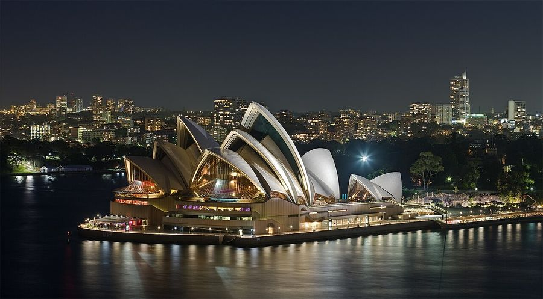
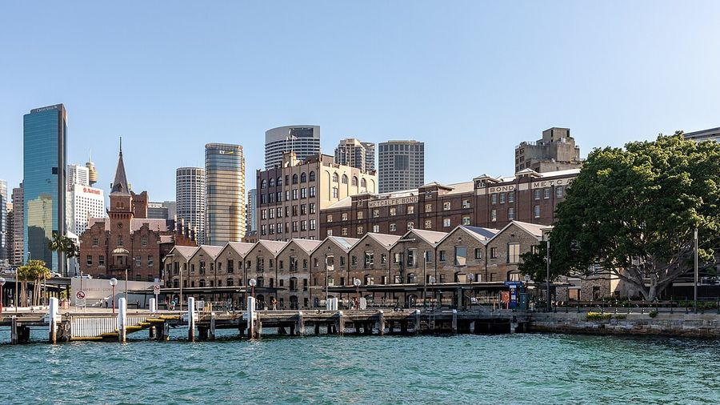
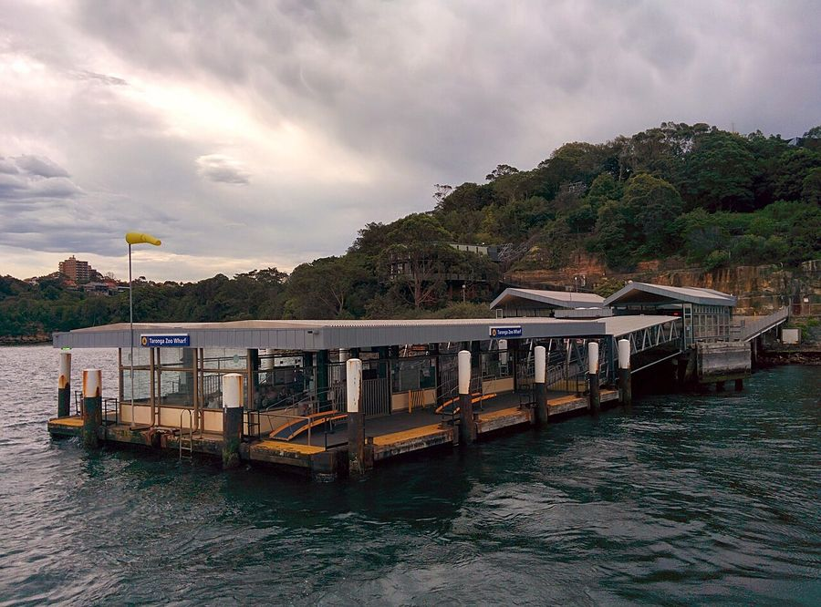
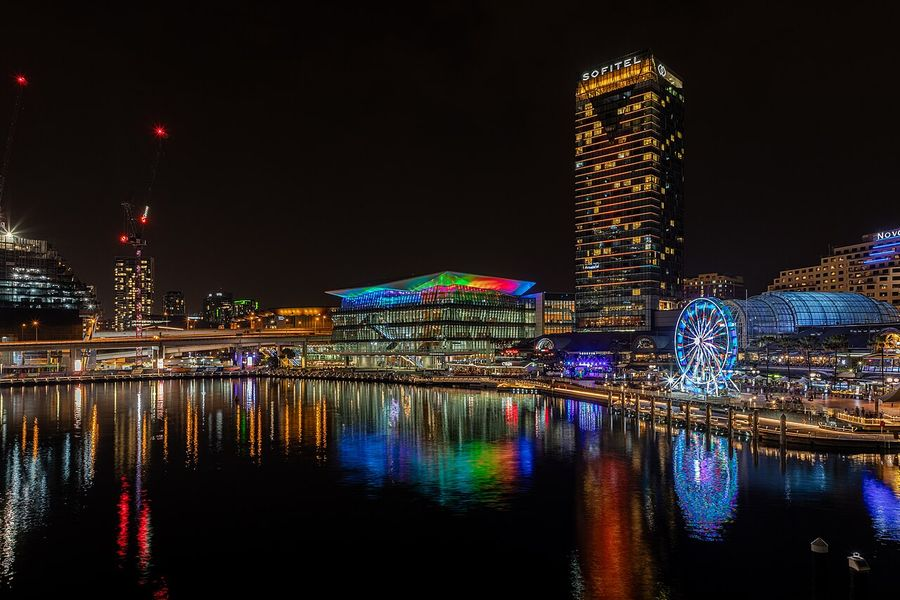
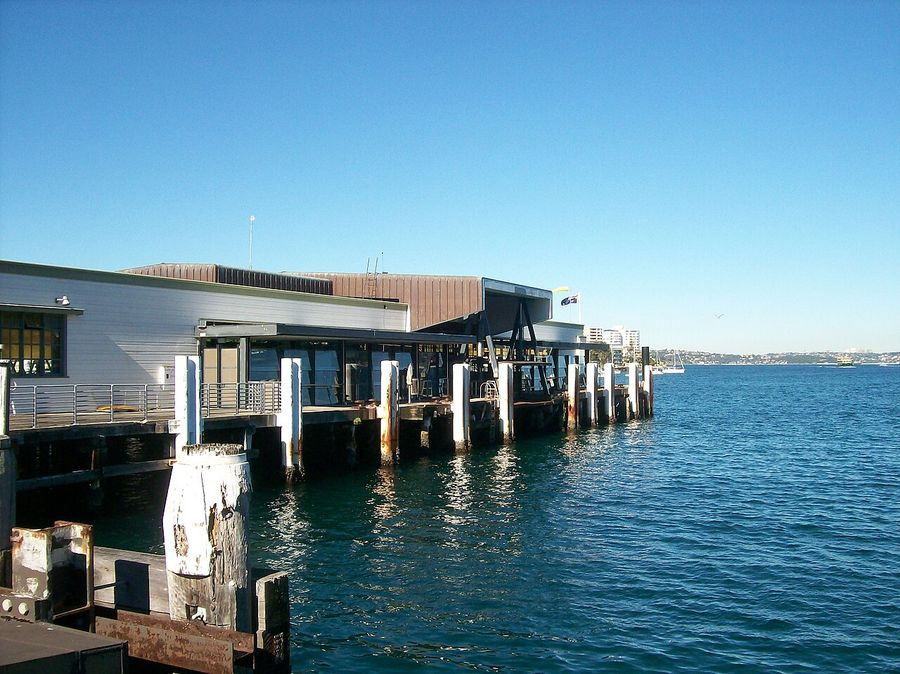

Sydney
Australia · 33.8570°S 151.2100°E

Dietmar Rabich · CC BY-SA 4.0
,_Opera_House_--_2019_--_3054.jpg){kind=link}
Make this Notebook Trusted to load map: File -> Trust Notebook
Điểm tham quan

Nhà hát Opera Sydney (UNESCO)- Harbour Bridge & BridgeClimb
- Bondi Beach – đường ven biển Bondi–Coogee
- Vườn Bách thảo Hoàng gia & Mrs Macquarie's Chair nearest match was 714 km away; not used

The Rocks
Taronga Zoo
Darling Harbour, SEA LIFE- Blue Mountains – Three Sisters

Manly ferry
Dệt may & smart textile
- - **Australian Wool Innovation / The Woolmark Company** — trụ sở Sydney; điều phối R&D len merino toàn cầu (bao gồm len hiệu năng, xử lý chống co, blend kỹ thuật). - **University of Wollongong** (≈1,5 h nam) — **ACES / Intelligent Polymer Research Institute**: smart textile từ **sợi carbon nanotube + spandex** vừa cảm biến vừa co giãn như cơ (artificial muscle); khai thác dữ liệu sensor mặc trên người. - **Deakin IFM** (Geelong, cùng bờ đông) — **nhóm nghiên cứu xơ sợi lớn nhất Nam bán cầu**; sợi dệt **strain-sensing** cho đồ nén theo dõi vận động viên và phục hồi chức năng; ARC Research Hub for Future Fibres. - Trục này là đối chiếu học thuật gần nhất với Nextiles (smart thread đo biomechanics) trong hồ sơ not found